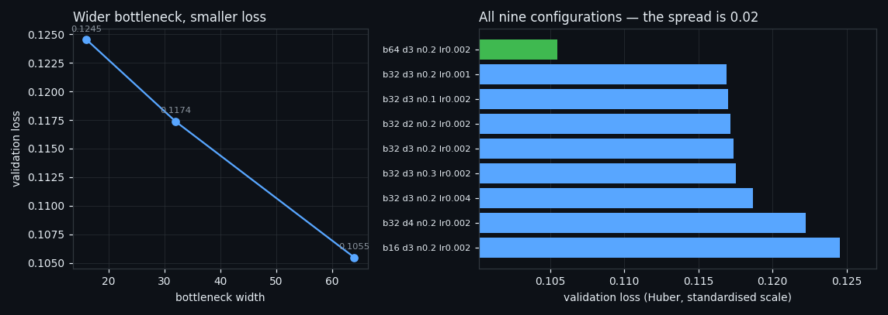
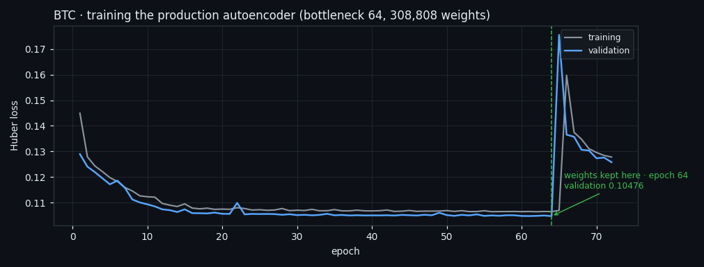
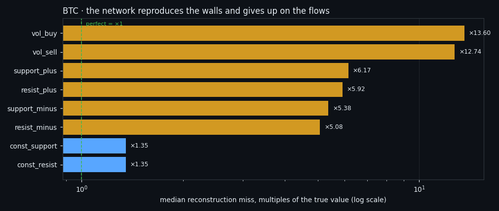

Eight Ways to Compress 210 Seconds: the Autoencoder That Lost to PCA
We cut 170 days of per-second Bitcoin order-book data into 50,143 back-to-back windows and pushed them through eight different compressions — PCA, a convolutional autoencoder, and six variants of both — to see whether a network finds market structure a linear method misses. It does not. Its raw stability is the best in the table and most of that stability survives when the data is shuffled into noise, which means it was never structure at all.
Full walkthrough — streamed from YouTube.
① A dirty tape, cut end to end
This study asks one question: when the whole tape is cut into windows — not just the interesting moments — does a neural network find structure that a linear method cannot?
Before any model, the data had to be made honest. The raw BTC series is 12,165,288 rows, and 192,496 of them are duplicate timestamps; left in place they let neighbouring windows share seconds, which quietly leaks training data into validation. After de-duplication 11,972,792 rows remain.
Then the uncomfortable number: laid on a continuous per-second grid the series should hold 14,691,826 seconds, and 18.507% of them are simply not there. Gaps are filled by interpolation, but a window is only used if at least 95% of its seconds are real. That leaves 50,143 windows of 210 seconds, cut back to back with no overlap, averaging 99.46% real seconds. Every feature is divided by its own 14-day norm.
The split is blocked, not random: the timeline is cut into 2-hour blocks, 5,061 windows go to validation, and **2,120 windows within 30 minutes of a validation block are deleted from training** — because adjacent windows are correlated and a random split would let the model read the answer from its neighbour.
② Nine configurations, and how little they mattered
The autoencoder is a 1-D convolutional network: eight features as eight channels, convolution along time only, trained to reconstruct the window it was given. Nine configurations were trained — three bottleneck widths (16, 32, 64), three depths, three noise levels, three learning rates.
The winner is bottleneck 64, depth 3, input noise 0.2, learning rate 0.002, with validation loss 0.10547. The loser scores 0.12453. That is the whole story of the grid: the spread across every architecture we tried is 0.019, and the only parameter that moves the number at all is the bottleneck width — which is to say, capacity, not cleverness.
A wider bottleneck reconstructs better. It does not, as we will see, produce better classes. Those two things are not the same question, and conflating them is the most common way to fool yourself with an autoencoder.

③ Where the training actually stopped
The production model was then trained properly: 308,808 weights, 72 epochs, and the weights kept are those of epoch 64 — the point where validation loss stopped improving while training loss kept falling. Final validation loss 0.10476.
This is bookkeeping, not a result, and it is here for one reason: every number in the rest of this article comes from that checkpoint, on windows the network never saw, with the embargo enforced. If the stopping point were chosen on the same data the classes are measured on, none of what follows would mean anything.

④ What the network reproduces — and what it gives up on
Reconstruction loss in a standardised scale is unreadable, so it was converted into something you can argue with: by what factor does the reconstruction miss the true value, feature by feature, on validation windows.
The two resting walls come back at ×1.35 — nearly exact. The four flows miss by ×5.08 to ×6.17. Executed volume is hopeless: ×12.74 and ×13.60.
That single chart explains why a shared latent space is a trap. The walls are smooth and large, the flows are spiky and small; a reconstruction loss rewards getting the walls right, so **the walls dominate the compressed representation** and the flows — which the neighbouring study shows to be the thing that actually distinguishes market states — get compressed away. Training one model per half of the book (walls: validation 0.00900; flows: 0.12650) is not a refinement here, it is a correction of that bias.

⑤ Eight compressions of the same windows, one rule
The same 50,143 windows were then pushed through eight different compressions — PCA, the autoencoder on all eight features, the autoencoder on each half of the book, two coarse-grained variants, and the recipe borrowed from the neighbouring market-states study — and clustered identically downstream.
Every one of them is judged by the same two things. Stability: rerun the pipeline on subsamples and measure how much two independent runs agree. The null control: run the identical pipeline on data whose cells have been shuffled between windows, so that all structure is destroyed and only the marginal distributions survive. The gap between those two is the only quantity that means anything.
And a third check, the size rule: a partition where one class swallows more than 30% of the windows, or where a class holds less than 8%, is not a partition of the market — it is a rounding error with labels. 2 of the 8 spaces satisfy it (10-second buckets, per-feature scale, the /states recipe on every window); the other 6 do not.
PCA is the sharpest illustration. Its gap looks magnificent — 0.472 stability against a null control of exactly 0.000 — and it is worthless, because 91.5% of all windows land in a single class. A stable answer and a useful answer are different things.

⑥ The null control eats the network's advantage
Read the red bars in the chart above and the case against the autoencoder is finished.
On all eight features the network reaches stability 0.709 — the kind of number that gets published. Its null control reaches 0.599. Almost all of that stability is manufactured: the same network, given windows whose contents were shuffled between each other, still assembles a partition it can reproduce. The honest gap is +0.110.
It is not an isolated case. Across the five spaces built from a trained encoder (autoencoder on all 8 features, autoencoder on the 2 walls, autoencoder on the 6 flows, the /states recipe on a 15k subsample, the /states recipe on every window) the null control runs 0.339 to 0.599 — not one of them is anywhere near zero. Of the three spaces built without a network, two sit at exactly 0.000 and the third at 0.359. Put a deep encoder in front of UMAP and HDBSCAN and you get beautiful, reproducible, entirely fictional clusters; the only thing standing between that and a published "market regime" is a control most people never run.
One caveat in our own numbers, in the same spirit. Stability here is measured with the space held fixed — the encoder is trained once and only the clustering is rebuilt on subsamples. A full rebuild, network included, would score lower, so every stability figure in this article is an upper bound. That does not rescue the network: its null control is measured exactly the same way, and it is the distance between the two that the verdict rests on.
This is the third time this project has reached the same conclusion from a different direction — event classes and window classes both ran into it — and it is the single most portable lesson here: if your clustering has no null control, you do not have a result.
⑦ Where classes do survive
Two spaces come through with both a real gap and a legal partition.
10-second buckets, per-feature scale — the window coarsened from 210 per-second values to 10-second buckets, each feature scaled on its own — gives stability 0.710 against a null control of 0.359, a gap of +0.351, with the largest class at 28.2% and the smallest at 11.4%.
the /states recipe on every window passes the size rule too, but its gap is only +0.085 — on this continuous, per-second dataset the recipe that works cleanly on the sliding set is much weaker.
The pattern across the eight is consistent: on raw per-second windows the splits either degenerate into one giant class or ride on a null control that is nearly as stable as the data. Structure appears once the window is coarsened — averaged into 10-second buckets, which is roughly the timescale at which order-book flow is actually organised. The fine per-second texture is not carrying the classes; it is carrying noise that the network is happy to memorise.
⑧ What we take from this
The network was given every advantage — its own architecture search, a blocked split with an embargo, 308,808 weights, and the same downstream clustering as everything else — and it did not earn its place. On raw stability it wins; on stability minus what the same pipeline invents from shuffled data, it loses to a linear rotation of axes that runs in a fraction of the time.
Three things are worth carrying out of here even if you never touch an order book. Reconstruction quality is not class quality — a wider bottleneck reconstructed better and clustered no better. A shared latent space belongs to whichever feature is largest and smoothest, so the interesting, spiky part of your data gets compressed out unless you separate it by hand. And the null control is not optional: it is the difference between a finding and a picture.
The companion studies: Two poles of market activity, which is the same question asked on non-overlapping sliding windows across six coins and gets a clean answer, and There are no classes in the order book, which tightens the input constraint until only the window's own numbers remain.
If this changed how you read the tape, the natural next step is Two Poles of Market Activity, Found Without a Teacher on Six Coins —
Two Poles of Market Activity, Found Without a Teacher on Six Coins
There Are No Classes in the Order Book — Only One State That Survives
Volume Is the Fuel — Not the Steering Wheel
We recorded the Binance order book every second for six coins over five months and ran eighteen tests on what volume really does.
About Market Research Lab — What We Collect and Why
Most market commentary is storytelling.
Comments
Discussion is powered by GitHub. Enable it by adding secrets/giscus.json (repo IDs from giscus.app).